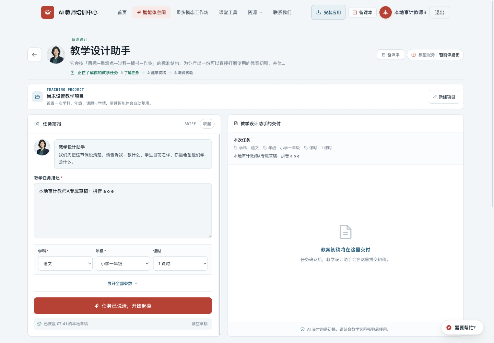
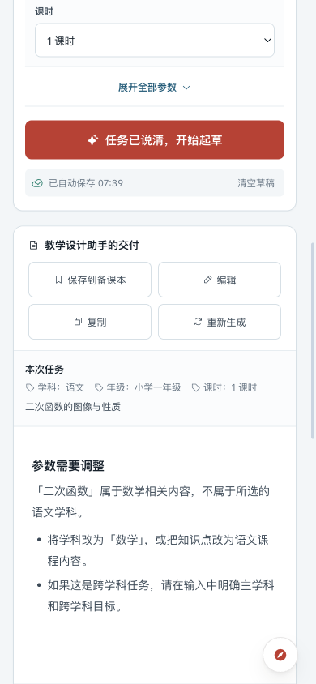
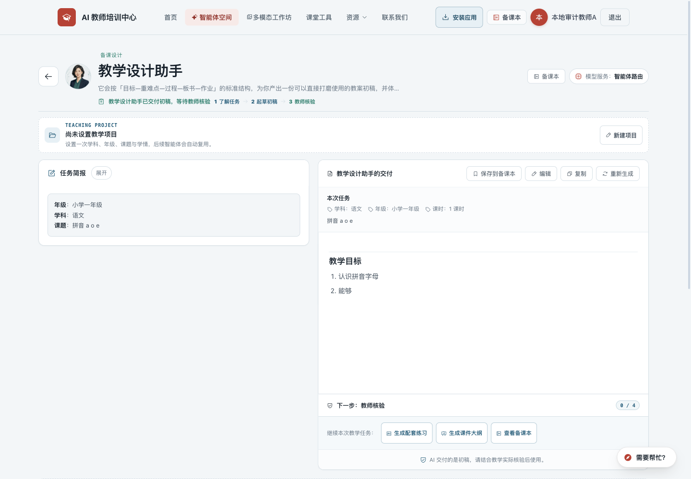

教师培训网站：运行、体验与视觉检查
检查日期：2026 年 9 月 21 日（北京时间）
项目：AI 教师培训中心 · 本地版本 a33e07a
线上检查地址：ai.teachailab.com
本次交付：检查报告与截图证据。未修改网站代码，未发布。
1. 总体判断
网站的基础结构和主要页面能够正常运行。现有红色品牌、教学任务分类、数字教师形象、备课本的阅读样式都有保留价值。当前最需要处理的是生成过程与草稿保护，然后是手机操作效率和内容质量；整体重做视觉的收益低于先修这些具体问题。
共整理 20 项问题与改进建议：5 项 P1、12 项 P2、3 项 P3。其中既有已复现的功能故障，也有基于界面证据的体验建议，不能把它们都理解为线上故障。
- P1：优先修复。 影响主要功能、已有成果或同设备账号隔离。
- P2：下一批完善。 影响使用效率、学习连续性、内容可信度或运营判断。
- P3：按产品方向选择。 视觉打磨、资讯定位与进一步性能优化。
证据标记：线上实测＝在公开网站实际操作；本地复现＝真实前端/接口代码配合合成账号与模拟响应；代码确认＝从实现与规则发现矛盾，尚未在真实登录账号下提交验证；体验判断＝截图与操作观察支持的设计建议。
2. 检查覆盖与边界
| 检查项 | 实际覆盖与结果 |
|---|---|
| 桌面与手机页面 | 首页、智能体、多模态、课堂工具、AI 工具、资源、资讯、学习路径、文章列表、提示词、备课本，共 11 个主要页面；桌面 1440×1000、手机 390×844 |
| 页面基础表现 | 上述手机页面未发现整页横向溢出；抽查可见图片正常加载；公开页面可以打开 |
| 智能体 | 19 个工作区本地逐一打开，17 个表单型、2 个对话型；测试必填、学段冲突、成功生成、编辑保存、失败重试、截断响应与重复提交 |
| 课堂工具 | 9 个工具逐一打开；实操倒计时、随机点名、小组计分、随机分组、座位交换；点名使用虚构姓名，未操作真实学生名单 |
| 多模态 | 下方案例详情可打开关闭；音频预览载入正常，时长约 20 秒；主推案例按钮发现故障；未评估实际扬声器音质 |
| 阅读与账户入口 | 文章详情可阅读；学习步骤、提示词复制、联系我们的游客限制已检查；登录弹窗 Escape 关闭正常 |
| 离线 | 已访问并缓存的课堂工具页面在断网后可重新打开；这不代表在线 AI 或全部页面都能离线使用 |
| 项目自动检查 | npm run check 通过：站点 11 个公开页面 / 13 个应用页面检查、课程约束 13 个场景、函数 57 项断言、腾讯云适配 8 项断言 |
| 线上回归脚本 | node scripts/check-production.mjs https://ai.teachailab.com/：95 项断言通过 |
**未覆盖的部分：**真实账号的注册、邮件/手机账户恢复、真实云端保存和跨账号云数据权限、管理后台实际增删改、真实模型输出质量与计费、麦克风采集、原生 Word/PDF 打开与打印、真机 Safari/微信浏览器。没有调用付费模型，没有向生产站提交测试作品、订阅邮箱或联系留言。登录后生成及保存界面的检查使用本地合成数据，因此报告不会把这些结果表述成真实云端端到端验收。
本报告是功能和产品体验检查，不是完整安全审计或无障碍合规认证。自动检查通过说明现有断言成立，不能覆盖本次发现的所有交互状态。
3. 教师使用旅程中出现的问题
| 使用步骤 | 当前表现 | 关联问题 |
|---|---|---|
| ① 找到教学任务 | 手机首屏被介绍与筛选占用；照搜索框例句输入也可能无结果 | F06、F11 |
| ② 了解并准备输入 | 从目录点任务先要求登录，直接链接却可预览；学习内容展开也被登录拦截 | F09 |
| ③ 生成教学材料 | 手机端隐藏按钮失效，可重复生成；等待缺乏取消；截断响应被当作完成 | F02、F04 |
| ④ 修改与重试 | 再次生成失败会清掉已有结果；同浏览器切换账号可能恢复另一人的本地草稿 | F01、F03 |
| ⑤ 收藏、复用、继续备课 | 已保存作品缺少直接修改入口；继续操作未携带所选作品上下文 | F10、F12 |
| ⑥ 持续学习与求助 | 文章类别大量为空、路径材料不够对应；订阅与手机号恢复存在流程矛盾 | F07、F08、F14、F15 |
4. 优先修复：5 项 P1
F01 · 同一设备上，草稿没有正确按账号隔离
证据：本地复现 + 代码确认。工作量：中。
草稿模块从 window.Auth 或 window._currentUser 读取用户，但实际认证脚本使用顶层 const Auth 和 let _currentUser，没有把它们挂到 window。本地检查中，认证 getter 返回 audit-a，草稿模块却返回 guest。
复现：合成教师 A 填写专属草稿，切换合成教师 B，再打开同一工作区，仍恢复 A 的文字。下图的登录名是 B，输入框保留 A 的专属文本。风险限于同一浏览器的本地草稿/项目数据；本次没有发现或验证云端作品跨账号泄露。
**建议方案：**建立唯一的认证状态读取接口，草稿键使用真实 UID；退出和切换账号时清空当前界面并重新加载所属草稿。旧 guest 数据不能静默归入任意新登录用户，应提供明确的认领或清理方式。
**验收：**A/B 切换、退出后游客浏览、游客再登录三个场景都不能自动显示他人草稿；刷新和重新打开自己的任务仍能恢复。
定位：js/teaching-projects.js:11–21，js/auth.js:147，js/firebase-config.js。

F02 · 手机端在不应出现时显示结果操作，可重复发起生成
证据：线上实测 + 本地复现。工作量：中。
手机样式的 display: grid !important 覆盖了脚本的 display:none，导致尚未生成、校验失败和生成中仍显示保存、编辑、复制、重新生成按钮。线上故意输入学段冲突内容被正确拦截，但这些按钮仍然出现。本地给接口增加延迟，先点主生成按钮，再点仍可用的重新生成，记录到 2 次生成请求。
**建议方案：**把“未生成 / 生成中 / 成功 / 失败”的显示和可操作性集中管理，移除覆盖隐藏状态的样式；所有生成入口共用请求锁。只有存在可用结果时显示保存/编辑/复制。
**验收：**快速连点、不同入口交替点击都只能有一个有效请求；空结果无法保存；错误和等待状态按钮一致。修复后回归桌面端与手机端。
定位：agents.html:354、:1468、:2408。

F03 · 再次生成失败会丢掉上一份成功结果
证据：本地复现 + 代码确认。工作量：中。
复现：先生成一份有效教案，再重新生成，让模拟接口返回 502。界面换成错误提示，保存到本地的结果字段也变成空字符串。错误提示却仍说输入和已有草稿已保存，会让教师误以为旧版本还在。
**建议方案：**在新请求成功前保留上一份结果及教师修改；将“本次尝试失败”显示为独立提示，支持返回上一版。新版本完整到达后再替换，不在请求开始时清空正式草稿。
**验收：**断网、502、超时、取消都不丢失上一次成功内容和手工编辑；刷新后仍可找回。
定位：agents.html:2393、:2441 及错误后的草稿持久化逻辑。
证据：重新生成失败界面。该错误界面的重试图标还受到占位图标大字号样式影响，建议随错误状态一起调整。
{kind=link}
F04 · 流式响应中途断开，会被当作完整结果；等待缺少取消
证据：真实接口代码的本地故障注入 + 本地界面复现。工作量：中至大。
后端读取上游流时吞掉异常，并正常关闭下游。用真实接口函数模拟“先返回一段文字，再断流”，下游仍得到 HTTP 200 和半段正文，没有错误信号。前端也把只写到“2. 能够”的示例判定为“已交付初稿，等待教师核验”，并开放保存。生成链路同时缺少明确的首字/空闲超时和用户停止操作。
**建议方案：**流协议区分内容片段、完成和错误；只有收到明确完成标记才显示完成。中断时保留部分文本并标注“未完成”，提供重试；加入停止生成、首字超时与空闲超时，并向上游传递取消信号。与 F03 的版本保留一起设计。
**验收：**首字前失败、输出中断、永不结束、主动取消、正常结束五类状态可以被可靠区分；部分内容不被自动标为完整交付。
定位：functions/api/agent.js:93–110、:407–430，agents.html:2940 起。机器可读证据：断流测试结果。

F05 · 多模态工作坊的主推案例按钮无效
证据：线上实测 + 代码确认。工作量：小。
点击页面顶部“古诗意境导入图”主推案例，控制台报 ReferenceError: openCaseModal is not defined，没有打开案例。原因是这里调用 openCaseModal('poem-image')，实际函数名为 openCase。下方卡片的“看步骤”能正常打开同一类详情。
**建议方案：**统一为现有正确的打开函数或共用事件入口，主卡与列表卡共用相同案例数据。
**验收：**主卡点击和键盘 Enter 都能打开指定案例；关闭后焦点回到原按钮。
定位：multimodal.html:220、:650。证据：主推区域、可正常打开的下方案例详情。
{kind=link}
{kind=link}
5. 流程、内容和运营：12 项 P2
| 编号 | 问题、证据与影响 | 建议方案与验收 | 工作量 |
|---|---|---|---|
| F06 | 任务搜索与提示不匹配。 线上输入搜索框建议的“设计一场小组活动”，返回 0 项，尽管已有课堂活动设计助手。代码只做完整字符串包含匹配。 | 加关键词拆分、任务同义词与简易排序；例句可点击试用；无结果时展示接近任务。验收以页面提供的全部示例及教师常用说法为准，无需增加模型费用。定位 agents.html:1217。截图 |
小至中 |
| F07 | 邮箱登记存在权限逻辑冲突。 代码先查询 subscribers 去重，仓库规则却仅允许管理员读取。按当前仓库规则，普通登录用户查询会被拒绝，无法进入新增步骤。未向生产提交邮箱，未核实生产所部署规则。 | 通过服务端完成去重和登记，不开放邮箱列表读取权限；提示明确是“登记待通知”还是已经提供邮件服务。验收普通用户首次登记、重复登记、未登录和网络失败。定位 js/data.js:836、js/auth.js:815、firestore.rules:213。 |
中 |
| F08 | 手机号账号的恢复求助入口形成循环。 密码恢复实现告诉手机账号用户“联系我们”，而游客点击“联系我们”实际打开注册/登录窗口；忘记密码页面只提供邮箱输入。 | 为未登录用户提供可访问的账号恢复说明与支持渠道，采用独立身份核验流程；手机登录旁明确展示恢复入口。验收忘记手机账号密码的用户可在不登录的情况下发起求助。定位 js/auth.js:159、js/assistant.js:591。 |
中 |
| F09 | 预览、学习、复制的登录门槛不一致。 线上从目录点任务被要求登录，直接进入任务链接却可看表单；学习路径写“登录后记录进度”，实际展开步骤也要求登录；公开可读的提示词点击复制又要求登录。 | 建议允许公开内容阅读、任务表单预览和官方提示词复制；在 AI 生成、个人保存、进度同步、投稿时登录。若保留门槛，应提前准确说明，并在登录后自动继续刚才的动作。定位 paths.html:345、prompts.html:183。目录登录门槛 |
中 |
| F10 | 备课本缺少保存后的修改与继续流程。 本地作品详情可阅读/导出，但没有直接修改正文入口。“继续用该智能体”只进入 /agents#智能体ID，没有携带选中作品 ID 或正文，不能保证继续的是这一份作品。 |
增加“编辑此作品”“以此为基础继续”，把选中正文与原始输入显式带入，保存为新版本或明确覆盖；教师核验状态可更新。验收旧作品 A 在已有任务草稿 B 时继续，加载的必须是 A。定位 workspace.html:1533、functions/api/works.js。作品详情 |
中至大 |
| F11 | 手机首屏用于介绍和筛选的空间过多。 智能体首个可用任务、工具页首个工具都靠近或低于首屏下缘；学习路径先堆叠三张大卡；课堂工具大卡单列滚动较长。页面没有横向溢出，但找任务仍慢。 | 手机标题和介绍压缩；成员索引改成可展开；筛选合并为一行滚动标签；工具使用紧凑列表或合适的双列。目标是在 390×844 首屏看到搜索和至少一个可直接执行的任务，不能靠缩小字体达成。智能体 / 工具 / 路径 | 中 |
| F12 | 手机生成结果阅读区拥挤。 输出标题、操作、说明占据固定高度面板的大部分空间，正文形成小窗口和内外两层滚动；不利于读完整教案。 | 手机上正文随内容自然伸展，或提供“展开阅读”视图；摘要/核验说明可折叠；保存、复制放在不遮正文的工具栏。验收长教案、表格、编辑和屏幕键盘打开时都能连续阅读。结果区 | 中 |
| F13 | 工具目录出现重复和信息缺失。 线上“蝉镜AI数字人”重复两次，缺少费用/语言等标签并归到“更多工具”。这些标签依赖按名称写死的 TOOL_META，新增内容无法完整继承。 |
用稳定 ID 和规范网址去重；任务、语言、费用、审核日期作为可维护的数据字段；空分类自动隐藏。验收新增工具后分类和标签完整、同名相同链接不重复。定位 tools.html:181 起。重复卡片 |
中 |
| F14 | 学习路径与配套内容连接薄弱。 当前 3 篇文章都属“实战技巧”，其余四类为空；部分“阅读配套实践文章”只去文章总列表，找不到对应步骤材料。学习进度存在本机 localStorage，不是跨设备云同步。 | 暂时隐藏空类或给出下一步推荐；每个路径步骤关联具体材料与一个可交付练习；明确进度仅存本机，或之后增加账号同步。验收每一步都能直达相关示例，空状态有有效去向。定位 paths.html:226–270。空分类 |
中 |
| F15 | 内容表达需要证据与边界。 页面有“歌曲记忆遗忘慢 3–5 倍”“2 小时教研抵半学期”等未显示来源的效果判断；部分模板鼓励填真实姓名；素材描述使用“无版权限制”等绝对表述。这里指出的是内容缺少依据与限定，未作具体授权法律判断。 | 无依据的效果改为目标或场景示例，有数据则标出处和条件；示例统一用化名；素材卡链接各平台当前官方许可和适用范围；建立内容审核日期。验收每个量化效果都有依据或被改写。定位 js/data.js:72、:78、:97、:100、:385–387。 |
中，需内容审核 |
| F17 | 部分课堂工具的键盘与读屏支持不足。 白板颜色/笔宽按钮无可理解名称；座位格是无 tabindex、无按钮语义的可点击 div；手机 6 列座位单格约 39px，长姓名截断。部分表单也缺少明确标签。 | 为按钮补名称和选中状态；座位支持键盘选中/交换，手机提供横向座位画布或缩放并保留完整姓名查看；输入项补 label，动态结果提示状态。验收仅用键盘完成设置和交换，再做读屏抽查。此项不等同全站 WCAG 认证。座位表 | 中 |
| F18 | 统计数据存在归类和身份丢失风险。 埋点也使用 window.Auth，本地已登录合成用户事件仍无身份；路径识别只匹配 .html，线上 /agents 等会归到 site；关闭安装提示产生的事件在线返回 400。 |
统一认证读取；同时规范化无后缀和 .html 路径；前后端事件名单一致，并记录失败。验收登录/游客、主要入口、生成/保存、安装提示关闭均正确归类，不重复计数。定位 js/analytics.js:43–72、functions/api/analytics.js。 |
中 |
{kind=link}
{kind=link}
{kind=link}
{kind=link}
{kind=link}
{kind=link}
{kind=link}
{kind=link}
{kind=link}
{kind=link}
6. 按方向选择：3 项 P3
F16 · 资讯应更贴近教师任务
证据：线上内容观察。工作量：中，持续编辑投入另计。
默认资讯里混有汽车销售、企业动态等内容，和备课、教学评价、教师成长的直接关系较弱。页面看起来更新频繁，但教师需要自己筛选价值。当前资讯截图
{kind=link}
建议默认提供“课堂实践 / 教研方法 / 教育政策 / 工具变化”栏目，每条增加简短的教师用途说明并保留原文链接；综合 AI 新闻作为可选栏目。先用少量人工精选验证使用价值，不必立即增加自动摘要模型成本。
F19 · 保留品牌，统一视觉层级与阅读体验
证据：桌面与手机截图对照。工作量：中；建议先选方向，再逐页调整。
当前红色品牌和偏纸面阅读感适合教育场景，建议保留。问题是不同页面的标题尺度、斜体强调、卡片密度、小字与操作层级不够一致；头像、介绍和装饰有时比教学任务更抢眼。
| 视觉部位 | 观察 | 建议调整 | 判断改善的标准 |
|---|---|---|---|
| 首页与列表首屏 | 首页介绍较高，桌面右侧留白较大；手机主要内容出现偏晚 | 压缩介绍高度，首屏突出“我要备课 / 出题 / 做课件”等已有任务入口；保留清晰留白 | 用户无需先阅读长介绍即可开始；手机首屏有真实操作 |
| 字号与颜色 | 部分辅助文字很小且颜色浅，标题与说明比例差距过大 | 建立少量统一字号；正文约 15–16px、说明约 12–13px，关键操作不使用弱对比；对真实配色做对比度检查 | 普通浏览与 200% 放大时仍清楚；不用缩小字体换密度 |
| 智能体卡片 | 人物识别突出，任务与交付物信息相对分散 | 保留人物但缩减手机头像占比，突出“适用任务、输出什么、开始” | 看卡片即可判断能否解决当前任务 |
| 结果与错误状态 | 信息框较多，手机正文拥挤；错误重试图标异常大 | 以正文为中心，说明次级；统一按钮高度、图标 16–20px 和加载/错误样式 | 状态变化不跳成另一套布局，错误提示仍有清晰下一步 |
| 文章阅读 | 大面积深色通用封面后连续出现两次相同大标题，正文被推到下方 | 封面改为主题相关的小型示意或真实教学产物预览；正文去掉重复一级标题 | 打开文章更快看到实质内容，标题层级清晰 |
| 安装提示 | 首次访问较早出现的底部浮层会遮住部分任务内容 | 在首次完成任务后或回访时轻提示，保留导航中的主动安装入口 | 新用户首次任务不被遮挡，提示可关闭并尊重选择 |
证据：首页、智能体桌面、手机智能体、文章重复标题、错误样式。
{kind=link}
{kind=link}
{kind=link}
建议选择的整体方向：“清晰的教师工作台”。保留现有红色标识与人物，减少大标题和装饰占高，把任务、填写、结果、保存做成一致的操作语言。此处是方向建议，尚未生成新视觉稿或修改页面。
F20 · 减少公共页无效请求和媒体预加载
证据：浏览器请求观察 + 代码确认。工作量：中。
公共页面仍普遍加载认证/Firestore 相关脚本；多模态列表会为波形读取整段音频，并较早请求视频元信息；多个页面的 pageCopy 请求 404 后再使用默认文案，虽然页面可用，但增加错误噪声和回退路径。
一次首页加载观察到文档首字节约 0.95 秒、DOMContentLoaded 约 1.81 秒、load 约 2.02 秒；后续页面受缓存和 Service Worker 影响。这些仅是本次浏览器样本，不能作为全国移动网络表现、Lighthouse 分数或性能百分位。本次没有证据表明需要整体重构。
建议预生成音频波形，媒体按接近可见或用户操作延迟加载；公共数据走轻量公共接口，对个人能力按需初始化；文案“未配置覆盖值”使用明确的正常返回语义。验收应在固定设备、清缓存、固定网络条件下重复比较请求数、传输量和首屏可操作时间。
定位：multimodal.html:487–542、公共脚本引用、js/site-copy.js 与 /api/content 回退逻辑。
7. 建议实施顺序，供你决定
| 批次 | 建议范围 | 预期结果 | 决策说明 |
|---|---|---|---|
| A · 核心可靠性 | F01–F05 | 草稿不串账号、不因失败丢失，不重复生成，完整/中断状态明确，主推案例可点 | 优先建议；包含前后端改动，F04 与 F03 应配套回归 |
| B · 使用更顺畅 | F06、F08–F12、F17 | 找任务、预览、生成、阅读、继续修改构成连续流程 | 需要确定公开内容的登录门槛；不必等待大改版 |
| C · 内容与运营可信度 | F07、F13–F16、F18 | 分类不空转，工具不重复，描述有依据，统计能反映真实使用 | 一部分是代码，一部分是持续编辑工作 |
| D · 统一视觉与加载 | F19、F20 | 保留品牌，统一层级，手机首屏紧凑，减少非必要加载 | 先确认“教师工作台”方向，再做首页、智能体、结果页三页样式样板 |
建议先做 A + F06，再处理手机端的 F11、F12。如果这次只想改善外观，可以先确认 F19 的方向，但这不能替代生成和草稿问题的修复。本报告中的小/中/大是相对改动范围，不是工期或费用承诺。
8. 证据图册
所有截图都来自本次检查；带“本地”字样的使用虚构教师与示例内容。截图没有经过视觉修饰。点击图片链接可查看原图。
| 编号 | 页面或状态 | 环境 |
|---|---|---|
| 01 | 首页桌面与安装浮层 | 线上 |
| 02 | 任务表单直接链接预览 | 线上 |
| 03 | 智能体桌面 | 线上 |
| 04 | 工具目录桌面 | 线上 |
| 05 | 多模态桌面 | 线上 |
| 06 | 课堂工具桌面 | 线上 |
| 07 | 资源桌面 | 线上 |
| 08 | 资讯桌面 | 线上 |
| 09 | 学习路径桌面 | 线上 |
| 10 | 文章列表桌面 | 线上 |
| 11 | 提示词桌面 | 线上 |
| 12 | 游客备课本登录提示 | 线上 |
| 13 | 首页手机 | 线上 |
| 14 | 智能体手机 | 线上 |
| 15 | 任务表单手机 | 线上 |
| 16 | 工具目录手机 | 线上 |
| 17 | 多模态手机 | 线上 |
| 18 | 课堂工具手机 | 线上 |
| 19 | 学习路径手机 | 线上 |
| 20 | 提示词手机 | 线上 |
| 21 | 资源手机 | 线上 |
| 22 | 资讯手机 | 线上 |
| 23 | 文章列表手机 | 线上 |
| 24 | 任务搜索例句无结果 | 线上 |
| 25 | 从目录进入任务的登录门槛 | 线上 |
| 26 | 手机座位表 | 线上 |
| 28 | 手机校验失败后的结果按钮 | 线上 |
| 29 | 重复的数字人工具卡片 | 线上 |
| 30 | 合成账号切换后恢复前一账号草稿 | 本地 |
| 31 | 手机生成结果阅读区 | 本地 |
| 32 | 示例作品列表 | 本地 |
| 33 | 示例作品桌面详情 | 本地 |
| 34 | 示例作品手机详情 | 本地 |
| 35 | 重新生成失败 | 本地 |
| 36 | 部分内容被标记交付 | 本地 |
| 37 | 可正常打开的多模态详情 | 线上 |
| 38 | 空文章分类 | 线上 |
| 39 | 文章封面与重复标题 | 线上 |
{kind=link}
{kind=link}
{kind=link}
{kind=link}
{kind=link}
{kind=link}
{kind=link}
{kind=link}
{kind=link}
{kind=link}
{kind=link}
{kind=link}
{kind=link}
{kind=link}
{kind=link}
{kind=link}
{kind=link}
{kind=link}
{kind=link}
{kind=link}
{kind=link}
截图 27 是重复的校验过程截图，已用信息更完整的 28 替代，不作为交付保留。